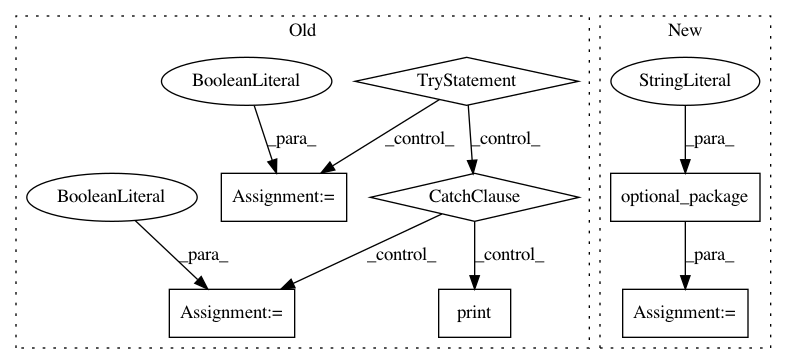

9b070e5a77a34ef8c085b9a88030435da84f79e0,dipy/viz/projections.py,,,#,11
Before Change
import numpy as np
import scipy.interpolate as interp
try:
import matplotlib
import matplotlib.pyplot as plt
import matplotlib.tri as tri
has_mpl = True
hot = matplotlib.cm.hot
except ImportError:
e_s = "You do not have Matplotlib installed. Some visualization functions"
e_s += " might not work for you."
print(e_s)
has_mpl=False
hot = None
plt = None
import dipy.core.geometry as geo
def sph_project(vertices, val, ax=None, vmin=None, vmax=None,
After Change
import scipy.interpolate as interp
from ..utils.optpkg import optional_package
matplotlib, has_mpl, setup_module = optional_package("matplotlib")
plt, _, _ = optional_package("matplotlib.pyplot")
tri, _, _ = optional_package("matplotlib.tri")
import dipy.core.geometry as geo
In pattern: SUPERPATTERN
Frequency: 3
Non-data size: 7
Instances
Project Name: nipy/dipy
Commit Name: 9b070e5a77a34ef8c085b9a88030435da84f79e0
Time: 2012-08-13
Author: mrbago@gmail.com
File Name: dipy/viz/projections.py
Class Name:
Method Name:
Project Name: nipy/dipy
Commit Name: 03bea9614c3b20955468c93dea59b3d67068b5c4
Time: 2016-01-11
Author: matthieu.dumont@usherbrooke.ca
File Name: dipy/workflows/base.py
Class Name:
Method Name:
Project Name: nipy/dipy
Commit Name: 1348c9df0125faf1a52ba2df9e20f17abd2fe600
Time: 2018-10-29
Author: skab12@gmail.com
File Name: dipy/viz/__init__.py
Class Name:
Method Name: